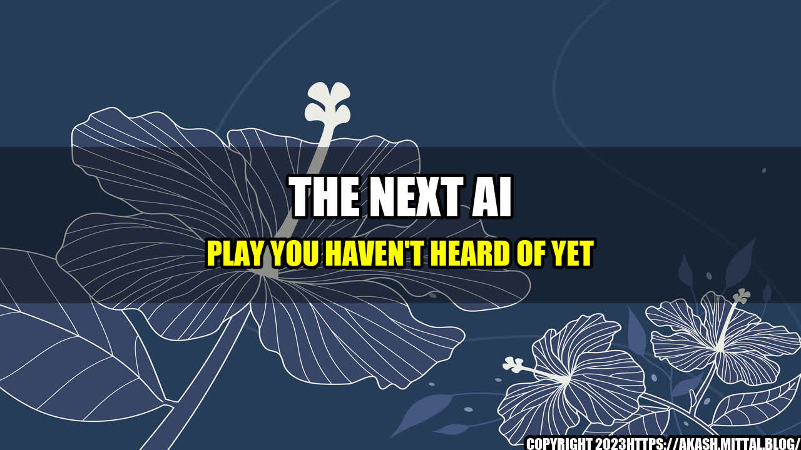

The Next AI Play You Haven't Heard of Yet
Have you ever thought about the endless possibilities that AI can bring? There are already so many amazing inventions that use AI, such as self-driving cars, drones, and even robots that can perform surgery. But what if I told you that there is an AI play that nobody is really talking about yet, but has the potential to revolutionize the way we live? Let me tell you a story.
Tommy is a farmer who has been struggling to keep up with the increasing demand for his produce. He has tried everything, from planting new crops to hiring more workers, but nothing seems to work. Then, one day, he hears about an AI technology that can predict weather patterns and provide suggestions on how to optimize crop yield. Tommy decided to give it a try and, to his amazement, he was able to double his crop yield in just one season. This technology not only helped him increase his profits but also helped him take care of the environment by reducing waste and optimizing resources.
Tommy's story is just one example of how AI can be used to solve real-world problems and make a positive impact on society. The potential of AI is limitless, and it's up to us to explore and discover the endless possibilities.
AI Success Stories
1. Healthcare
AI has the potential to transform the healthcare industry by providing personalized care, improving diagnoses, and developing new and more effective treatments. For instance, researchers are currently developing AI algorithms that can accurately predict breast cancer with 90% accuracy, which is much higher than current methods.
2. Finance
Financial institutions are beginning to use AI to improve fraud detection, automate customer service, and provide personalized investment advice. JP Morgan, for example, has developed an AI system that can analyze legal documents and extract important information in seconds, saving lawyers countless hours of work.
3. Education
AI has the potential to personalise learning and create more effective teaching methods. For example, Carnegie Learning has developed an AI-powered math tutor that can adapt to each student's learning style and provide personalized feedback, resulting in improved performance and better engagement.
What's the Next AI Play?
The potential of AI is enormous, but what's the next big thing? Here are three potential AI plays that could revolutionize the way we live:
1. Smart Cities
AI can help cities become more efficient, sustainable, and livable. For example, AI algorithms could be used to optimize traffic flow, reduce energy consumption, and predict and prevent crime.
2. Virtual Assistants
Voice-activated virtual assistants, such as Siri and Alexa, have become incredibly popular, but they are still in their early stages. The next AI play could be a virtual assistant that can truly understand and respond to human emotions, needs, and desires, providing personalized and empathetic support.
3. Climate Change
AI can be used to help mitigate the effects of climate change by improving weather predictions, optimizing energy use, and even finding new and renewable sources of energy.
Conclusion
The potential of AI is limitless, and we have only scratched the surface of what it can do. With AI, we have the power to solve real-world problems, make a positive impact on society, and create a better future for generations to come. Here are three key takeaways from this article:
- AI can be used to solve real-world problems, such as improving healthcare, finance, and education.
- The next big AI play could be in smart cities, virtual assistants, or climate change.
- The potential of AI is enormous, and it's up to us to explore and discover the endless possibilities.
Curated by Team Akash.Mittal.Blog
Share on Twitter Share on LinkedIn